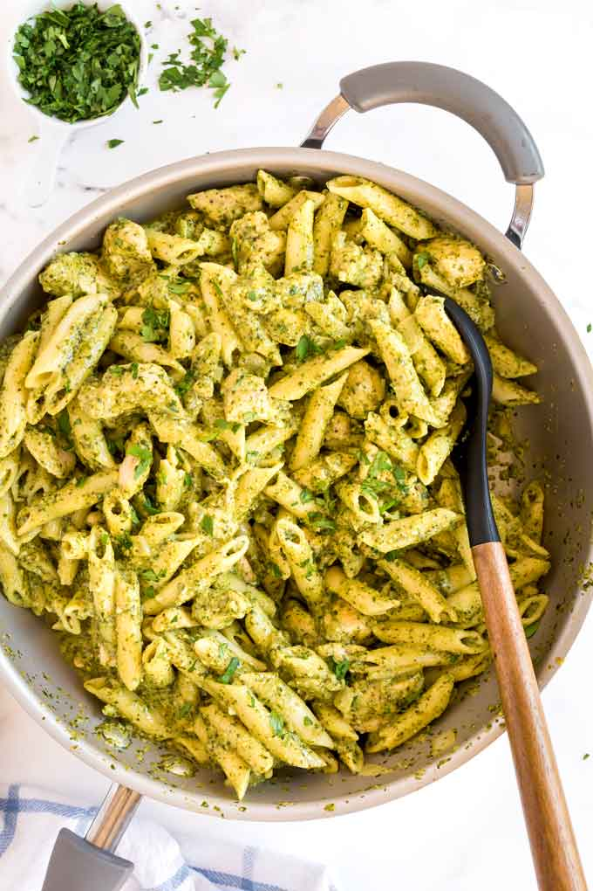

<!DOCTYPE html>
<html lang="en">
<head>
    <meta charset="UTF-8">
    <meta http-equiv="X-UA-Compatible" content="IE=edge">
    <meta name="viewport" content="width=device-width, initial-scale=1.0">
    <title>Chicken Pesto Pasta/title>
</head>
<body>
    <h1>Chicken Pesto Pasta</h1>
    
    <p>Creamy <strong>Chicken Pesto Pasta</strong> that is made with
    tasty grilled chicken and tender pasta smotherd in basil pesto sauce. 
    This recipe is easy to make and comes together in 30 minutes.
    </p>
    <ul>Bonless and Skinless Chicken Breast. <em>Chicken thighs can also be used</em></ul>
    <ul>Pesto Sauce</ul>
    <ul>Brown or Yellow Onions and Fresh Garlic</ul>
    <ul>Olive Oil</ul>
    <ul>Regular or Low-sodium Chicken Broth</ul>
    <ul>All-purpose Flour</ul>
    <ul>Unsalted Butter</ul>
    <ul>Half and Half</ul>
    <ul>Parmesan Cheese</ul>
    <ul>Garlic Powder, Italian Seasoning, Salt and Ground Black Pepper</ul>
    <ul>Your Choice of Pasta</ul>
    <br>
    <h1>Directions</h1>
    <li>Step 1<p>Cook the pasta in salted water until al dente. Reserve about 1/2 cup of cooking water and drain the pasta./p>
    </li>
    <li>Step 2 <p>While the pasta is cooking, season the chicken with Italian seasoning, salt and pepper then sprinkle with flour and toss to coat.</p> </li>
    <li>Step 3 <p>In a large skillet, cook the chicken until golden brown then remove the chicken from the skillet. Set aside.</p> </li>
    <li>Step 4 <p>In the same skillet, melt the butter and saute the onions until they become translucent. Add the garlic and cook for a minute.
    </p> </li>
    <li>Step 5 <p>Add the broth to the skillet and deglaze it by scraping the bottom with a wooden spoon. This will remove the brown bits stuck at the bottom of the pan.</p> </li>
    <li>Step 6 <p>Add the pesto, half and half and garlic powder and simmer. The sauce will start to thicken a bit.</p> </li>
    <li>Step 7 <p>Return the chicken and any collected juices to the skillet. Simmer for a few minutes.</p> </li>
    <li>Step 8 <p>Stir in the Parmesan cheese and mix well to combine.</p> </li>
    <li>Step 9 <p>Add the pasta and toss gently. If you want a creamier consistency, add some of the cooking water and mix well.</p> </li>
</body>
</html>